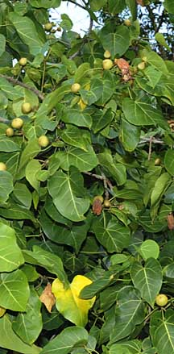
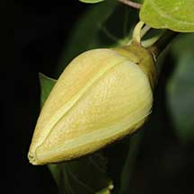
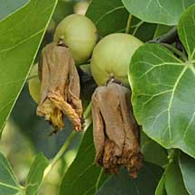
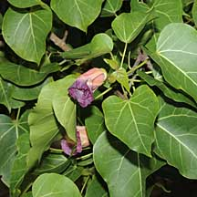
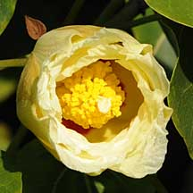
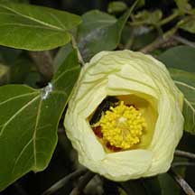
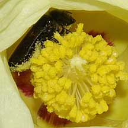
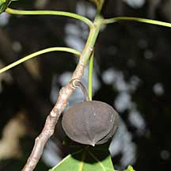
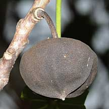

|
|
|
plants text index | photo
index
|
| coastal plants |
|
Baru-baru or
Portia tree Thespesia populnea Family Malvaceae updated Nov 10 Where seen? Not as commonly seen as the Sea hibiscus (Hibiscus tiliceaus), this similar looking plant is sometimes seen on our shores and near our mangroves. Elsewhere, it is found on beaches, sandy and rocky coasts as well as back mangroves. It has a wide distribution as the seeds can stay alive in seawater for many months. Features: A shrub that can grow to a rather tall tree (2-10m tall). Conical crown when young, becoming spreading with age. Leaves more triangular than heart-shaped. The leaves are fleshy and shiny with midribs and veins yellow, and are arranged in a spiral. According to Tomlinson, some specimens of this tree also have leaf-slits on the undersides like the Sea hibiscus (Hibiscus tiliceaus). Flower typical hibiscus shape, pale yellow with maroon eye. Stigma column pale yellow, stigma pale yellow. According to Corners, the flowers open late in the morning, about 10am. The flowers fade to pink on the plant and does not fall off for several days. Fruits large (2-4cm), flattened globe containing 3-4 seeds covered with dense, short hairs. The fruit generally does not open on the plant and floats. The fruit contains a bright yellow gum. The fruit is the primary means of dispersal, although the seeds may also float. Bark light grey becoming rugged with deep fissures. Human uses: According to Burkill, thoughout much of the Pacific, the tree is considered sacred and planted near temples. He suggests this is because the tree was so important to sea-faring people. It is used interchangeably with the Sea hibiscus (Hibiscus tiliceaus) for cordage. The timber is hard and Fiji natives praise it as being "almost indestructible underwater". In the Philippines it is prized for making musical instruments. According to Hugh Tan, oil is extracted from the seeds and gum from the bark, while an orange-yellow dye is extracted from the wood. |
 Pasir Ris, Jun 09  Flower bud about to blossom. |
|
 Developing fruits. |
 Flowers past their bloom. |
 Flower just blossoming. |
|
 Chek Jawa, Feb 08  Insect pollinating the flower? |
 Changi, May 09  |
more photos of portia trees on Singapore shores
|
Links
References
|
|
|